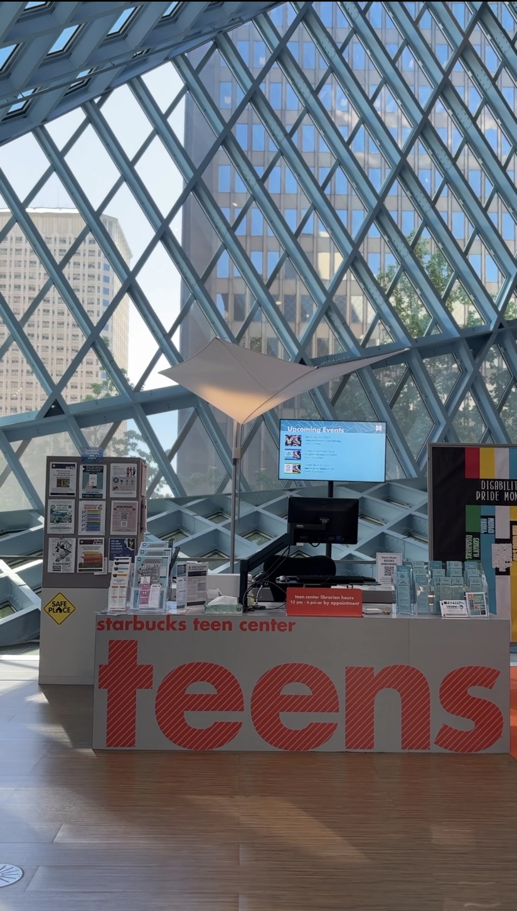
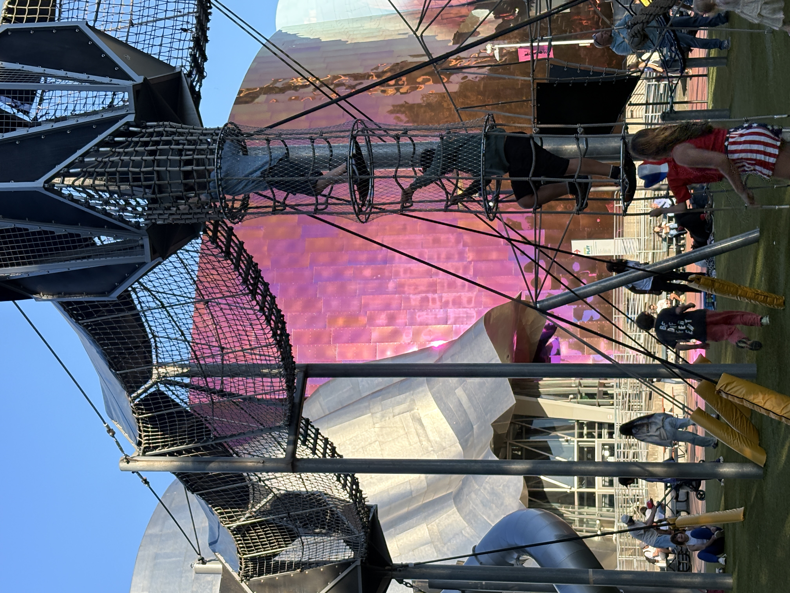

신청서도, 성적표도 필요 없습니다.
미국 경제가 주고, 우리 아이가 받는 장학금.
우리가 매일 쓰는 회사들이 전부 이 안에 있습니다.
미국의 은퇴 자금, 대학 기금, 연기금이 이 500개 회사에 함께 투자합니다. 이유는 하나 — 미국 경제가 자라는 만큼, 이 500개 회사가 자라기 때문입니다.
이 회사들의 성장은 주가에만 머물지 않습니다. 본사가 있는 도시로 흘러갑니다.
시애틀이 그 증거입니다. 이 도시에 가보면, 기업의 이름이 아이들의 공간에 그대로 적혀 있습니다.


2026년 7월, 직접 촬영
출처: S&P Dow Jones Indices, 2026
이름은 다르지만 전부 같은 원리입니다. 미국 경제가 주고, 우리 아이가 받는.
교육비 목적의 대표 계좌. 세금 혜택 위에서 자라고, 최근에는 남은 금액을 Roth IRA로 전환할 수 있는 옵션까지 열렸습니다.
2025년 도입된 아동 대상 은퇴형 계좌. 2025~2028년 출생아에게는 정부가 $1,000을 넣어주며, 그 외 18세 미만 자녀도 개설할 수 있습니다. 미국 주식시장에 연결되어 자랍니다.
아이에게 근로소득이 생기는 순간 열리는 평생 비과세 성장 계좌. 시작이 빠를수록 복리가 일하는 기간이 압도적으로 길어집니다.
보장과 저축이 함께 가는 구조. 나이가 어릴수록 유리한 조건으로 시작할 수 있고, 사용처에 제한이 없는 유연함이 강점입니다.
어떤 장학금부터, 왜 그 순서인지까지 — 전부 공개합니다.